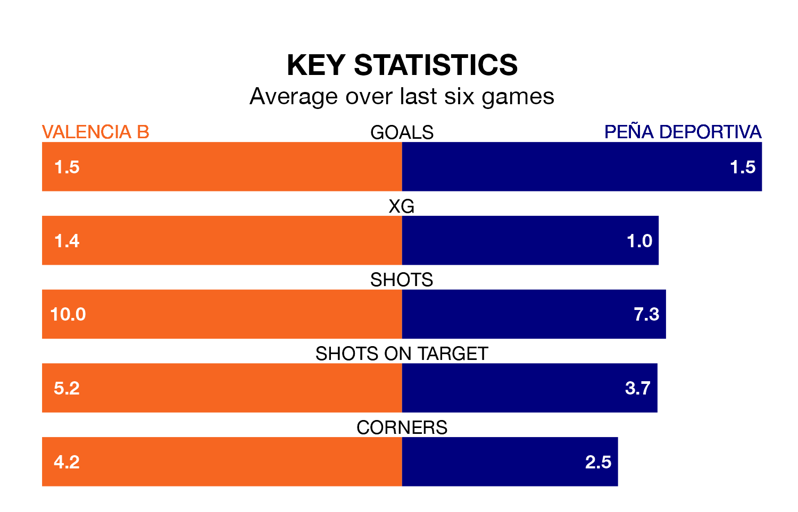

Peña Deportiva visit Valencia B at the Estadio Antonio Puchades on early Sunday on the back of three consecutive wins in Segunda División RFEF Group 3.
Peña Deportiva have picked up 12 points from their last six games, and they face a Valencia B side who have also won their last two matches, and collected seven points from the last possible 18.
With 27 goals in 20 games so far this season, Valencia B are scoring more than average in the league with 1.4 goals per game. And they are conceding at an average rate, letting in 24 goals at a rate of 1.2 per game.
Peña Deportiva are also above average scorers, with 1.4 goals per game, compared to a league average of 1.2. They have conceded 1.6 goals per game.
In the last 10 years, Valencia B and Peña Deportiva have played each other on seven occasions. Peña Deportiva won three of them and they drew four times.
On average, Valencia B scored 0.4 goals and Peña Deportiva 0.9 in those matches.
Their last meeting was on September 24, when Peña Deportiva won 2-1 at home.
The visitors are sixth in the table after 20 games, of which they have won eight and drawn six, earning 30 points.
The home team are six places behind Peña Deportiva in 12th, with six wins and six draws putting them on 24 points.
Valencia B's last match was on January 28, a 3-0 win against Penya Independent.
Peña Deportiva beat Manresa 2-1 last time out, also on January 28.
Updated: 13:20 (UTC), 29/01/24